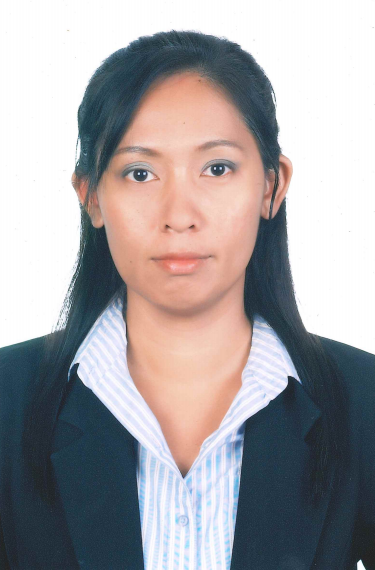

ดร.ปิยะ ถิรพันธุ์เมธี | Piya Thirapanmethee, Ph.D.

คุณวุฒิ
ปร.ด.(เทคโนโลยีสารสนเทศและการสื่อสารเพื่อการศึกษา) มหาวิทยาลัยเทคโนโลยีพระจอมเกล้าพระนครเหนือ
Ph.D. (Information and Communication Technology for Education)
King Mongkut's University of Technology North Bangkok
วท.ม. (เทคโนโลยีสารสนเทศ) มหาวิทยาลัยเทคโนโลยีพระจอมเกล้าธนบุรี
M.Sc. (Information Technology) King Mongkut's University of Technology Thonburi
อส.บ. (เทคโนโลยีอิเล็กทรอนิกส์) สถาบันเทคโนโลยีพระจอมเกล้าเจ้าคุณทหาร ลาดกระบัง
B.Ind.Tech. (Electronics) King Mongkut's Institute of Technology Ladkrabang
ประสบการณ์สอน
» โครงสร้างข้อมูล (Data Structure)
» เครือข่ายคอมพิวเตอร์ (Computer Network)
» ระบบปฏิบัติการ (Operating System)
» วิศวกรรมซอฟต์แวร์ (Software Engineering)
» ความมั่นคงของระบบสารสนเทศ (Information System Security)
» การจัดระเบียบคอมพิวเตอร์และสถาปัตยกรรม(Computer Organization and Architecture)
» ดิจิทัลอิเล็กทรอนิกส์ (Digital Electronics)
» การประมวลสัญญาณดิจิตอล (Digital Signal Processing)
» การจัดการองค์กรและระบบสารสนเทศ (Management Information System in Organization)
สาขางานวิจัย
» Computer Network
» Information and Communication Technology for Education
เอกสารงานวิจัย
วารสารวิชาการระดับชาติ
» ปิยะ ถิรพันธุ์เมธี และ พัลลภ พิริยะสุรวงศ์. 2557.
“การพัฒนารูปแบบเฟรมเวิร์คธนาคารข้อสอบบนระบบประมวลผลแบบกลุ่มเมฆ”
วารสารวิชาการและวิจัยมหาวิทยาลัยเทคโนโลยีราชมงคลพระนคร. ปีที่ 8, ฉบับที่ 2 (กันยายน): .
» ปิยะ ถิรพันธุ์เมธี และ พัลลภ พิริยะสุรวงศ์. 2556. “ระบบประมวลผลแบบกลุ่มเมฆกับสถาบันการศึกษา”
วารสารวิจัยมหาวิทยาลัยเทคโนโลยีราชมงคลกรุงเทพ. ปีที่ 7, ฉบับที่ 2 (กรกฎาคม – ธันวาคม): .
» ปิยะ ถิรพันธุ์เมธี. 2556. “มาตรฐานผู้ให้บริการระบบประมวลผลแบบกลุ่มเมฆ” วารสารการอาชีวะและเทคนิคศึกษา.
ปีที่ 3, ฉบับที่ 6 (มิถุนายน-ธันวาคม): .
» ปิยะ ถิรพันธุ์เมธี และ ณมน จีรังสุงรรณ. 2556.
“รูปแบบการเรียนวิชาโครงงานโดยอาศัยความร่วมมือกับสถานประกอบการผ่านแฟ้มสะสมงานอิเล็กทรอนิกส์.”
วารสารวิทยสุวรรณภูมิ. ปีที่ 1, ฉบับที่ 2 (มกราคม – มีนาคม) .
International Conferences
» Monrada Sirimongkol, Piya Thirapanmetee, Sureeporn Nualnim and Sudjai Ngamsuriyapong. 2017.
"Development of Learning Media using Augmented Reality." The 11th National Conference and 2017-1
International Conference on Applied Computer Technology and Information Systems and 2017-1 National
Conference on Businese Administration. January 25. Southeast Bangkok College: 6-9.
» Pattarawan Sea-Heng and Piya Thirapanmetee. 2016. "Development of Electronic Media Using Augmented
Reality for Thai Lessons of Primary 2." Proceedings of the 7th Rajamangala University of Technology
International Conference (7th RMUTIC). August 24-26. Rajamangala University of Technology Krungthep.
» Piya Thirapanmethee and Pallop Piriyasurawong. 2014. “The Development of Item Bank Software Framework”
The 5th Rajamangala University of Technology International Conference (5th RMUTIC). 23-25 July
Rajamangala University of Technology Suvarnabhumi.
งานประชุมวิชาการระดับชาติ
» มนรดา ศิริมงคล, ปิยะ ถิรพันธุ์เมธี, สิริอร นุชผดุง และสุเมธ ใจเย็น. 2560.
"ระบบพิพิธภัณฑ์ศิลปินภาพถ่ายโดยใช้เทคโนโลยีเสมือนจริง." การประชุมวิชาการระดับชาติวิทยาศาสตร์และเทคโนโลยี
ครั้งที่ 1. 19 มกราคม. มหาวิทยาลัยเทคโนโลยีราชมงคลสุวรรณภูมิ ศูนย์พระนครศรีอยุธยา หันตรา: 159-168.
» ปิยะ ถิรพันธุ์เมธี และ พัลลภ พิริยะสุรวงศ์. 2556. “รูปแบบระบบประมวลผลแบบกลุ่มเมฆสำหรับสถาบันการศึกษา”
การประชุมวิชาการระดับชาติด้านคอมพิวเตอร์และเทคโนโลยีสารสนเทศ ครั้งที่9. 9-10 พฤษภาคม
มหาวิทยาลัยเทคโนโลยีพระจอมเกล้าพระนครเหนือ.
นางศรีสุดา สรนันต์ศรี | Mrs. Srisuda Soranunsri

คุณวุฒิ
ค.อ.ม. (คอมพิวเตอร์และเทคโนโลยีสารสนเทศ) มหาวิทยาลัยเทคโนโลยีพระจอมเกล้าธนบุรี
M.S.Tech.Ed.(Computer and Information Technology) King Mongkut's University of Technology Thonburi
วท.บ. (ศาสตร์คอมพิวเตอร์) มหาวิทยาลัยรามคำแหง
B.Sc. (Computer Science) Ramkhamhaeng University
ประสบการณ์สอน
» หลักการเขียนโปรแกรมคอมพิวเตอร์ (Principle of Computer Programming)
» ระบบฐานข้อมูล (Database System)
» ระบบจัดการฐานข้อมูล (Database Management System)
» ระเบียบวิธีการเขียนโปรแกรม (Programming Methodology)
» การวิเคราะห์และออกแบบระบบ (System Analysis and Design)
» วิทยาการคอมพิวเตอร์และเทคโนโลยีสารสนเทศเบื้องต้น (Introduction to Computer Science and Information
Technology)
เอกสารงานวิจัย
วารสารวิชาการระดับชาติ
งานประชุมวิชาการระดับชาติ
» ศรีสุดา สรนันต์ศรี, นพรัตน์ ภัยวิมุติ, เบญจมาศ ตัณฑะเตมีย์ และพรพรรณ ตระกูลขจรศักดิ์. 2563.
"การพัฒนาระบบสารสนเทศเพื่อบริหารจัดการระบบการตลาดออนไลน์ของเกษตกรผู้เพาะเลี้ยงปลาดุกสู่การยกระดับเป็นผู้ประกอบการ
4.0 กรณีกลุ่มเกษตรกรผู้เพาะเลี้ยงปลาดุก บ้านดอนตะเคียน ต.ยุ้งทะลาย อ.อู่ทอง จ.สุพรรณบุรี".
การประชุมวิชาการระดับชาติเชิงสร้างสรรค์ราชมงคลกรุงเทพวิชาการ ครั้งที่ 3. 5-7 สิงหาคม.
โรงแรมแกรนด์แปซิฟิก ซอฟเฟอริน รีสอร์ทแอนด์สปา ชะอำ จ.เพชรบุรี: 125-132.
» ศรีสุดา สรนันต์ศรี, นพรัตน์ ภัยวิมุติ, รสชพร จันทร์โถ และ ศรวิษฐ์ นาคเกษม. 2562.
“การพัฒนาระบบสารสนเทศเพื่อบริหารจัดการมะม่วงส่งออกต่างประเทศ ด้วยคิวอาร์โค้ด
กรณีศึกษากลุ่มมะม่วงบ้านท่าทอง จ.สุพรรณบุรี”.
การประชุมวิชาการระดับชาติเชิงสร้างสรรค์ราชมงคลกรุงเทพวิชาการ. โรงแรมลอฟต์มาเนียบูติคโฮเทล จังหวัดชุมพร.
19-21 มิถุนายน: 208-215.
» นพรัตน์ ภัยวิมุติ, ศรีสุดา สรนันต์ศรี, ธนพัต สังข์ทอง และวินัย จันทร์รักษ์. 2562.
“ระบบควบคุมการให้น้ำและปุ๋ย สวนมะม่วงของเกษตรกร ผ่านสมาร์ทโฟนบนระบบปฏิบัติการแอนดรอยด์”.
การประชุมวิชาการระดับชาติ IAMBEST. ครั้งที่ 4. โรงแรม Tinidee Hotel@Ranong อำเภอเมือง จังหวัดระนอง.
30-31 พฤษภาคม: 857-867.
» ศาศวัต จำเริญสุข, อริสรา ศิริพราหมนุกูล, ศรีสุดา สรนันต์ศรี และนพรัตน์ ภัยวิมุติ. 2562.
“การพัฒนาระบบสารสนเทศเพื่อส่งเสริมอาหารฮาลาลและการท่องเที่ยวเชิงวัฒนธรรมในสังคมเมืองด้วยคิวอาร์โค้ด
กรณีศึกษาชุมชนมุสลิม ตลาดริมคลองสวนหลวงเจริญกรุง 103”. การประชุมวิชาการระดับชาติวิทยาศาสตร์และเทคโนโลยี.
ครั้งที่ 3 (3rd NCOST). คณะวิทยาศาสตร์และเทคโนโลยี มหาวิทยาลัยเทคโนโลยีสุวรรณภูมิ ศูนย์พระนครศรีอยุธยา
หันตรา จังหวัดพระนครศรีอยุธยา. 18 มกราคม.
» นพรัตน์ ภัยวิมุติ, ศรีสุดา สรนันต์ศรี, ศราวุฒิ คลังภูเขียว และยุทธนา เนียมอ่า. 2560.
"ระบบสารสนเทศเพื่อการจัดการงานบริการวิชาการ."
การประชุมวิชาการระดับนานาชาติและระดับชาติด้านด้านเทคโนโลยีคอมพิวเตอร์และระบบสารสนเทศประยุกต์
และการประชุมวิชาการด้านบริหารธุรกิจ ครั้งที่ 11. 25 มกราคม. วิทยาลัยเซาธ์อีสท์บางกอก บางนา
กรุงเทพมหานคร: 209-214.
นายชาญวิทย์ มุสิกะ | Mr. Chanwit Musika

คุณวุฒิ
วท.ม. (เทคโนโลยีอินเทอร์เน็ตและสารสนเทศ) มหาวิทยาลัยนเรศวร
M.Sc. (Internet and Information Technology) Naresuan University
ค.อ.บ. (วิศวกรรมคอมพิวเตอร์) สถาบันเทคโนโลยีราชมงคล
B.S.Tech.Ed. (Computer Engineering) Rajamangala Institute of Technology
ประสบการณ์สอน
» ไมโครคอนโทรลเลอร์ (Microcontroller)
» ระบบฝังตัว (Embedded System)
» การศึกษาเฉพาะเรื่องทางวิทยาการคอมพิวเตอร์ (Selected Topic in Computer Science)
» ระบบไมโครคอมพิวเตอร์และการต่อประสาน (Microcomputer System and Interfacing)
» เทคโนโลยีและการประยุกต์ใช้อินเทอร์เน็ต (Internet Technology and Applications)
เอกสารงานวิจัย
วารสารวิชาการระดับชาติ
งานประชุมวิชาการระดับชาติ
» ชาญวิทย์ มุสิกะ, ชนาเนตร อรรถยุกติ, สิริอร นุชผดุง และวัชรพงษ์ ทัพจีน. 2560.
"ระบบควบคุมเป้าพลิกด้วยไมโครคอนโทรลเลอร์."
การประชุมวิชาการระดับนานาชาติและระดับชาติด้านด้านเทคโนโลยีคอมพิวเตอร์และระบบสารสนเทศประยุกต์
และการประชุมวิชาการด้านบริหารธุรกิจ ครั้งที่ 11. 25 มกราคม. วิทยาลัยเซาธ์อีสท์บางกอก บางนา
กรุงเทพมหานคร: 284-289.
ดร.ธวัชชัย สารวงษ์ | Thawatchai Sarawong, Ph.D.

คุณวุฒิ
ปร.ด. (เทคโนโลยีสารสนเทศ) มหาวิทยาลัยเทคโนโลยีพระจอมเกล้าพระนครเหนือ
Ph.D. (Information Technology) King Mongkut's University of Technology North Bangkok
ค.อ.ม. (เทคโนโลยีคอมพิวเตอร์) สถาบันเทคโนโลยีพระจอมเกล้าพระนครเหนือ
M.S.Tech.Ed. (Computer Technology) King Mongkut’s Institute of Technology North Bangkok
ค.อ.บ. (วิศวกรรมคอมพิวเตอร์) สถาบันเทคโนโลยีราชมงคล
B.S.Tech.Ed. (Computer Engineering) Rajamangala Institute of Technology
ประสบการณ์สอน
» การประมวลผลแฟ้มข้อมูล (File Processing)
» ระบบปฏิบัติการ (Operating System)
» หลักการเขียนโปรแกรมคอมพิวเตอร์ (Principle of Computer Programming)
เอกสารงานวิจัย
วารสารวิชาการระดับชาติ
งานประชุมวิชาการระดับชาติ
» ชาญวิทย์ มุสิกะ, ชนาเนตร อรรถยุกติ, สิริอร นุชผดุง และวัชรพงษ์ ทัพจีน. 2560.
"ระบบควบคุมเป้าพลิกด้วยไมโครคอนโทรลเลอร์."
การประชุมวิชาการระดับนานาชาติและระดับชาติด้านด้านเทคโนโลยีคอมพิวเตอร์และระบบสารสนเทศประยุกต์
และการประชุมวิชาการด้านบริหารธุรกิจ ครั้งที่ 11. 25 มกราคม. วิทยาลัยเซาธ์อีสท์บางกอก บางนา
กรุงเทพมหานคร: 284-289.
นางกุลชยา พงษ์แสวง | Mrs. Kulchaya Pongsawaeng

คุณวุฒิ
กศ.ม. (ธุรกิจศึกษา) มหาวิทยาลัยศรีนครินทรวิโรฒ ประสานมิตร
M.Ed. (Business Education) Srinakharinwirot University
บธ.บ. (การจัดการทั่วไป) มหาวิทยาลัยสุโขทัยธรรมาธิราช
B.B.A. (General Management) Sukhothai Thammathirat Open University
ประสบการณ์สอน
» คอมพิวเตอร์พื้นฐาน (Fundamental of Computer)
» โปรแกรมสำเร็จรูป
สาขางานวิจัย
» สาขาวิชามนุษยศาสตร์และสังคมศาสตร์
» เทคโนโลยีคอมพิวเตอร์และระบบสารสนเทศประยุกต์
เอกสารงานวิจัย
วารสารวิชาการระดับชาติ
» ธวัชชัย สารวงษ์ และศิรปัฐช์ บุญครอง. 2555. "การประมวลผลเชิงกลุ่มเมฆแบบเฉพาะกิจ."
วารสารพัฒนาเทคนิคศึกษา. ปีที่ 24, ฉบับที่ 83 (กรกฎาคม-กันยายน): 100-107.
งานประชุมวิชาการระดับชาติ
ผู้ช่วยศาสตราจารย์นพรัตน์ ภัยวิมุติ | Asst. Prof. Nopparat Paivimut

คุณวุฒิ
ศษ.ม. (เทคโนโลยีและสื่อสารการศึกษา) มหาวิทยาลัยสุโขทัยธรรมาธิราช
M.Ed (Educational Technology and Communication) Sukhothai Thammathirat Open University
บธ.บ. (คอมพิวเตอร์ธุรกิจ) มหาวิทยาลัยสยาม
B.B.A (Business Computer) Siam University
ประสบการณ์สอน
» การเขียนโปรแกรมคอมพิวเตอร์เบื้องต้น
» โปรแกรมสำเร็จรูป
» ระบบฐานข้อมูลเบื้องต้น
» คอมพิวเตอร์พื้นฐาน (Fundamental of Computer)
» คอมพิวเตอร์เบื้องต้นและภาษาเบสิก
» การโปรแกรมคอมพิวเตอร์เบื้องต้น(ภาษาเทอร์โบปาสคาล)
» การโปรแกรมคอมพิวเตอร์เบื้องต้น(ภาษาซี)
» การโปรแกรมคอมพิวเตอร์เบื้องต้น(ภาษาวิชวลเบสิก)
สาขางานวิจัย
» สาขาวิชามนุษยศาสตร์และสังคมศาสตร์
» สาขาการประยุกต์เทคโนโลยีคอมพิวเตอร์เละระบบสารสนเทศทางการศึกษา
เอกสารงานวิจัย
วารสารวิชาการระดับชาติ
» นพรัตน์ ภัยวิมุติ. 2551. "สภาพปัญหาและความต้องการในการใช้ระบบฐานข้อมูลงานวิจัยแบบออนไลน์ของอาจารย์
มหาวิทยาลัยเทคโนโลยีราชมงคลกรุงเทพ." วารสารวิจัยมหาวิทยาลัยเทคโนโลยีราชมงคลกรุงเทพ. ปีที่ 2, ฉบับที่ 2
(กรกฎาคม - ธันวาคม): 59-64.
งานประชุมวิชาการระดับชาติ
» นพรัตน์ ภัยวิมุติ, ศรีสุดา สรนันต์ศรี, ศราวุฒิ คลังภูเขียว และยุทธนา เนียมอ่า. 2560.
"ระบบสารสนเทศเพื่อการจัดการงานบริการวิชาการ."
การประชุมวิชาการระดับนานาชาติและระดับชาติด้านด้านเทคโนโลยีคอมพิวเตอร์และระบบสารสนเทศประยุกต์
และการประชุมวิชาการด้านบริหารธุรกิจ ครั้งที่ 11. 25 มกราคม. วิทยาลัยเซาธ์อีสท์บางกอก บางนา
กรุงเทพมหานคร: 209-214.
» นพรัตน์ ภัยวิมุติ และ ชัยศักดิ์ คล้ายแดง. 2557. การพัฒนารูปแบบการสร้างผู้ประกอบการใหม่(NEC) กรณีศึกษา
หลักสูตรธุรกิจผสมเครื่องดื่ม เพื่อสุขภาพ . มหาวิทยาลัยเทคโนโลยีราชมงคลกรุงเทพ.
» นพรัตน์ ภัยวิมุติ. 2556. การพัฒนารูปแบบการบ่มเพาะนักศึกษาสู่การเป็นผู้ประกอบการใหม่(NEC).
มหาวิทยาลัยเทคโนโลยีราชมงคลกรุงเทพ.
» นพรัตน์ ภัยวิมุติ. 2549. การพัฒนาและหาประสิทธิภาพบทเรียนคอมพิวเตอร์ช่วยสอนรายวิชา คอมพิวเตอร์พื้นฐาน
มหาวิทยาลัยเทคโนโลยีราชมงคลกรุงเทพ. สถาบันเทคโนโลยีราชมงคลกรุงเทพ วิทยาเขตเทคนิคกรุงเทพ.
» นพรัตน์ ภัยวิมุติ. 2548. ชุดการเรียนด้วยสื่ออิเล็กทรอนิกส์แบบอิงประสบการณ์
เรื่องการพัฒนาระบบงานทางคอมพิวเตอร์ วิชาการโปรแกรมคอมพิวเตอร์เบื้องต้น
มหาวิทยาลัยเทคโนโลยีราชมงคลกรุงเทพ. มหาวิทยาลัยสุโขทัยธรรมาธิราช.
นางสาวสุรีพร นวลนิ่ม | Ms. Sureeporn Nualnim

คุณวุฒิ
ค.อ.ม. (เทคโนโลยีคอมพิวเตอร์) สถาบันเทคโนโลยีพระจอมเกล้าพระนครเหนือ
M.S.Tech.Ed. (Computer Technology) King Mongkut’s Institute of Technology North Bangkok
ค.อ.บ. (วิศวกรรมคอมพิวเตอร์) สถาบันเทคโนโลยีราชมงคล
B.S.Tech.Ed. (Computer Engineering) Rajamangala Institute of Technology
ประสบการณ์สอน
» วิทยาการคอมพิวเตอร์และเทคโนโลยีสารสนเทศเบื้องต้น (Introduction to Computer Science and Information
Technology)
» คอมพิวเตอร์กราฟิก (Computer Graphics)
» การปฏิสัมพันธ์ระหว่างมนุษย์กับคอมพิวเตอร์ (Human-Computer Interaction)
» เทคโนโลยีและการประยุกต์ใช้อินเทอร์เน็ต (Internet Technology and Applications)
» การออกแบบเว็บไซต์ (Website Design)
» อัลกอริทึมส์ (Algorithms)
สาขางานวิจัย
» สาขาวิชามนุษยศาสตร์และสังคมศาสตร์
» สาขาการประยุกต์เทคโนโลยีคอมพิวเตอร์เละระบบสารสนเทศทางการศึกษา
เอกสารงานวิจัย
International Conferences
นางสาวชนาเนตร อรรถยุกติ | Ms. Chananate Arthayukti

คุณวุฒิ
วท.ม. (วิทยาศาสตร์คอมพิวเตอร์) จุฬาลงกรณ์มหาวิทยาลัย
M.Sc. (Computer Science) Chulalongkorn University
บธ.บ. (ระบบสารสนเทศ) สถาบันเทคโนโลยีราชมงคล
B.B.A. (Information System) Rajamangala Institute of Technology
ประสบการณ์สอน
» การเขียนโปรแกรมเชิงวัตถุ (Object-Oriented Programming)
» การวิเคราะห์และออกแบบเชิงวัตถุ (Object-Oriented Analysis and Design)
» การเขียนโปรแกรมบนเว็บ (Web Programming)
» การโปรแกรมคอมพิวเตอร์ขั้นสูง (Advanced Programming)
» วิศวกรรมซอฟต์แวร์ (Software Engineering)
สาขางานวิจัย
» สาขาวิชามนุษยศาสตร์และสังคมศาสตร์
» สาขาการประยุกต์เทคโนโลยีคอมพิวเตอร์เละระบบสารสนเทศทางการศึกษา
เอกสารงานวิจัย
วารสารวิชาการระดับชาติ
งานประชุมวิชาการระดับชาติ
» ชาญวิทย์ มุสิกะ, ชนาเนตร อรรถยุกติ, สิริอร นุชผดุง และวัชรพงษ์ ทัพจีน. 2560.
"ระบบควบคุมเป้าพลิกด้วยไมโครคอนโทรลเลอร์."
การประชุมวิชาการระดับนานาชาติและระดับชาติด้านด้านเทคโนโลยีคอมพิวเตอร์และระบบสารสนเทศประยุกต์
และการประชุมวิชาการด้านบริหารธุรกิจ ครั้งที่ 11. 25 มกราคม. วิทยาลัยเซาธ์อีสท์บางกอก บางนา
กรุงเทพมหานคร: 284-289.
นายสถิระ ชัยชนะกลาง | Mr. Satira Chaichanaklang

คุณวุฒิ
วท.ม. (การศึกษาวิทยาศาสตร์-คอมพิวเตอร์) สถาบันเทคโนโลยีพระจอมเกล้าเจ้าคุณทหาร ลาดกระบัง
M.Sc. (Science Education (Computer)) King Mongkut's Institute of Technology Ladkrabang
ค.อ.บ. (อิเล็กทรอนิกส์และคอมพิวเตอร์) สถาบันเทคโนโลยีพระจอมเกล้าเจ้าคุณทหาร ลาดกระบัง
B.S.Tech.Ed. (Electronics and Computer) King Mongkut's Institute of Technology Ladkrabang
ประสบการณ์สอน
» การจัดระเบียบคอมพิวเตอร์และสถาปัตยกรรม (Computer Organization and Architecture)
» ดิจิทัลอิเล็กทรอนิกส์ (Digital Electronics)
» ระบบมัลติมีเดียและการประยุกต์ใช้ (Multimedia System and Applications)
เอกสารงานวิจัย
งานประชุมวิชาการระดับชาติ
» สถิระ ชัยชนะกลาง, กุลชยา พงษ์แสวง, พิชญ์สินี สุรินธรรม และน้ำทิพย์ ผุดผ่อง. 2560.
"เครื่องมือออกแบบวงจรซีเควนเชียล แบบซิงโครนัส."
การประชุมวิชาการระดับนานาชาติและระดับชาติด้านด้านเทคโนโลยีคอมพิวเตอร์และระบบสารสนเทศประยุกต์
และการประชุมวิชาการด้านบริหารธุรกิจ ครั้งที่ 11. 25 มกราคม. วิทยาลัยเซาธ์อีสท์บางกอก บางนา
กรุงเทพมหานคร: 314-318.
นายฉัตรชัย รักถิ่น

คุณวุฒิ
M.S. (Information System), Ney Jersey Institute of Technology, NJ, U.S.A.
M.S. (Telecommunication and Network Management), Syracuse University, U.S.A.
B.Sc. (Information Technology) มหาวิทยาลัยอัสสัมชัญ
B.Sc. (Information Technology) Assumption University of Thailand
ผู้ช่วยศาสตราจารย์.ดร.อรสา พัสดุ | Asst. Prof. Orasa Patsadu, Ph.D.

คุณวุฒิ
ปร.ด. วิทยาการคอมพิวเตอร์ (หลักสูตรภาษาอังกฤษ) มหาวิทยาลัยเทคโนโลยีพระจอมเกล้าธนบุรี
Ph.D. Computer Science (English Program) King Mongkut's University of Technology Thonburi
วท.ม. (วิศวกรรมซอฟต์แวร์) มหาวิทยาลัยเทคโนโลยีพระจอมเกล้าธนบุรี
M.Sc. (Software Engineering) King Mongkut's University of Technology Thonburi
บธ.บ. (ระบบสารสนเทศ) มหาวิทยาลัยเทคโนโลยีราชมงคลกรุงเทพ
B.B.A. (Information System) Rajamangala University of Technology Krungthep
ประสบการณ์สอน
» Data Science
สาขางานวิจัย
» Data mining
» Data Science
» Software Engineering
เอกสารงานวิจัย
International Journals
» Watanapa, B., Patsadu, O., Dajpratham, P., and Nukoolkit, C.. 2018. “Post-Fall Intelligence Supporting
Fall Severity Diagnosis Using Kinect Sensor.” Applied Computational Intelligence and Soft Computing,
Vol. 2018, Article ID 5434897, 15 pages. https://doi.org/10.1155/2018/5434897.
» Patsadu, O., Watanapa, B., Dajpratham, P., and Nukoolkit, C.. 2018. “Fall Motion Detection with Fall
Severity Level Estimation by Mining Kinect 3D Data Stream.” The International Arab Journal of
Information Technology. ISSN: 1683-3198, Vol. 15, No. 3, pp. 378-388, 2018.
วารสารวิชาการระดับชาติ
International Conferences
» Patsadu O. 2018. “Survey of technologies for stroke symptom detection: techniques and tools”. In Proc.
Of the 6th International Conference on Creative Technology. Cholchan Pattaya resort Pattaya Chonburi
Thailand. July 24-26: 124-130.
» Tavelertsopon K., Ngeamjuekred P., Bootchai N. and Patsadu O. 2018. “Drowsy driver detection system of
human face using camera and sound notification”. In Proc. Of the 2nd International MultiConference of
Management Science (IMMS) 2018 “The Management of Digital Contents for Energizing Business Engine”.
Bansomdejchaopraya Rajabhat University. Bangkok. Thailand. July 23-24: 38-47.
» Patsadu, O., Watanapa, B., and Nukoolkit, C.. 2017. “A Multiple-stage Classification of Fall Motions
Using Kinect Camera.” In Proc. Of the 13th, International Conference on Computing and Information
Technology. July 6-7, 2017, Arnoma Grand Bangkok Hotel, Bangkok, Thailand, pp. 118-129, 2017.
» Patsadu, O., Nukoolkit, C., and Watanapa, B.. 2012. “Survey of Smart Technologies for Fall Motion
Detection: Techniques, Algorithms and Tools.” In Proc. of the 5th International Conference on Advances
in Information Technology. pp. 137 - 147.
» Patsadu, O., Nukoolkit, C., and Watanapa, B.. 2012. “Human Gesture Recognition Using Kinect Camera.”
In Proc. of the 9th International Joint Conference on Computer Science and Software Engineering. pp. 28
- 32.
งานประชุมวิชาการระดับชาติ
» อรสา พัสดุ, วิทิดา จงศุภชัยสิทธิ์ และพรชัย มงคลนาม. 2553.
"การเปรียบเทียบความซับซ้อนของโอเพ่นซอสซอฟต์แวร์กับโปรแกรมโครงงานของนักศึกษาชั้นปีที่ 4
คณะเทคโนโลยีสารสนเทศ มหาวิทยาลัยเทคโนโลยีพระจอมเกล้าธนบุรี."
การประชุมวิชาการระดับประเทศด้านเทคโนโลยีสารสนเทศ ครั้งที่ 3 (NCIT2010). 28-29 ตุลาคม. โรงแรม
ดิเอมเมอรัลด์ กรุงเทพมหานคร.
» อรสา พัสดุ, วิทิดา จงศุภชัยสิทธิ์ และพรชัย มงคลนาม. 2552. "การศึกษาความซับซ้อนของโปรแกรมภาษา Java
โดยใช้ Metric ต่าง ๆ." การประชุมทางวิชาการ ม.อ. ภูเก็ตวิจัย ครั้งที่ 2
สหวิทยาการเพื่อการพัฒนาอย่างยั่งยืน. มหาวิทยาลัยสงขลานครินทร์ วิทยาเขตภูเก็ต.
นางสาวมนรดา ศิริมงคล | Ms. Monrada Sirimongkol

คุณวุฒิ
วท.ม. (เทคโนโลยีสารสนเทศ) มหาวิทยาลัยเทคโนโลยีพระจอมเกล้าธนบุรี
M.Sc. (Information Technology) King Mongkut's University of Technology Thonburi
วท.บ. (วิทยาการคอมพิวเตอร์) มหาวิทยาลัยเทคโนโลยีราชมงคลกรุงเทพ
B.Sc. (Computer Science) Rajamangala University of Technology Krungthep
ประสบการณ์สอน
» Data Science
สาขางานวิจัย
» การพัฒนารูปแบบสื่อออนไลน์ (Online Media Development)
» คอมพิวเตอร์พื้นฐาน (Fundamental of Computer)
เอกสารงานวิจัย
International Journals
International Conferences
งานประชุมวิชาการระดับชาติ
» โชติมนต์ นุรารักษ์ ,กชกร เทียนบาง และมนรดา ศิริมงคล. 2564.
“ระบบตอบคำถามอัตโนมัติการบริการงานทะเบียนด้วยไลน์แชทบอท.”
การประชุมวิชาการระดับชาติวิทยาศาสตร์และเทคโนโลยี ครั้งที่ 5(5th NCOST). คณะวิทยาศาสตร์และเทคโนโลยี
มหาวิทยาลัยเทคโนโลยีราชมงคลสุวรรณภูมิ ศูนย์พระนครศรีอยุธยา หันตรา จังหวัดพระนครศรีอยุธยา. 15-16 มกราคม.
หน้า 1051-1062.
» ธนพล อนุเผ่า, นฤวัต ดีสว่างเนตร, มนรดา ศิริมงคล. 2563.
“ระบบสารสนเทศเพื่อการนัดหมายอาจารย์ที่ปรึกษาด้วยโปรแกรมประยุกต์ไลน์”.
การประชุมวิชาการระดับชาติวิทยาศาสตร์และเทคโนโลยี ครั้งที่ 4 (4th NCOST). คณะวิทยาศาสตร์และเทคโนโลยี
มหาวิทยาลัยเทคโนโลยีราชมงคลสุวรรณภูมิ ศูนย์พระนครศรีอยุธยา หันตรา จังหวัดพระนครศรีอยุธยา.
(ISBN:978-974-625-875-3). 17-18 มกราคม: 195-202.
» สรศักดิ์ จิตอารี ,อนุศิฐ พึ่งตระกูล ,มนรดา ศิริมงคล. 2563.
“โปรแกรมประยุกต์ระบบนำทางด้วยเทคโนโลยีโลกเสมือนภายในมหาวิทยาลัยเทคโนโลยีราชมงคลกรุงเทพ”.
การประชุมวิชาการระดับชาติวิทยาศาสตร์และเทคโนโลยี ครั้งที่ 4 (4th NCOST). คณะวิทยาศาสตร์และเทคโนโลยี
มหาวิทยาลัยเทคโนโลยีราชมงคลสุวรรณภูมิ ศูนย์พระนครศรีอยุธยา หันตรา จังหวัดพระนครศรีอยุธยา.
(ISBN:978-974-625-875-3). 17-18 มกราคม: 342-350.
» ชัยวัฒน์ พึ่งอุทัย, ธนดล ธนาวิจิตร, มนรดา ศิริมงคล, นิลุบล บุตรไชย. 2562.
“ระบบสารสนเทศซุปเปอร์แพ็ทคลีนิครักษาสัตว์”. การประชุมวิชาการระดับชาติวิทยาศาสตร์และเทคโนโลยี ครั้งที่ 3
(3rd NCOST). คณะวิทยาศาสตร์และเทคโนโลยี มหาวิทยาลัยเทคโนโลยีราชมงคลสุวรรณภูมิ ศูนย์พระนครศรีอยุธยา
หันตรา จังหวัดพระนครศรีอยุธยา. 18 มกราคม.
» มนรดา ศิริมงคล, ปิยะ ถิรพันธุ์เมธี, สิริอร นุชผดุง และสุเมธ ใจเย็น. 2560.
"ระบบพิพิธภัณฑ์ศิลปินภาพถ่ายโดยใช้เทคโนโลยีเสมือนจริง." การประชุมวิชาการระดับชาติวิทยาศาสตร์และเทคโนโลยี
ครั้งที่ 1. 19 มกราคม. มหาวิทยาลัยเทคโนโลยีราชมงคลสุวรรณภูมิ ศูนย์พระนครศรีอยุธยา หันตรา: 159-168.
นางสาวนิลุบล บุตรไชย | Ms. Nilubon Bootchai

คุณวุฒิ
M.S. (Computer Science), Syracuse University, U.S.A.
B.S. (Computer Science), Syracuse University, U.S.A.
ประสบการณ์สอน
» ผู้ช่วยนักวิเคราะห์ข้อมูลความปลอดภัย
สาขางานวิจัย
» ความปลอดภัยทางโลกไซเบอร์
เอกสารงานวิจัย
International Conferences
» Tavelertsopon K., Ngeamjuekred P., Bootchai N., Patsadu O. 2018. "Drowsy driver detection system of
human face using camera and sound notification". In Proc. of The 2nd International MultiConference of
Management Science (IMMS) 2018 "The Management of Digital Content for Energizing Business Engine". July
23-24. Bansomdejchaopraya Rajabhat University, Bangkok, Thailand: 38-47.
งานประชุมวิชาการระดับชาติ
นายศุภฤกษ์ ฉัตรธนโชติ | Mr. Supharoek Chattanachot

คุณวุฒิ
วท.ม. (เทคโนโลยีสารสนเทศ) มหาวิทยาลัยเทคโนโลยีพระจอมเกล้าธนบุรี
M.Sc. (Information Technology) King Mongkut’s University of Technology Thonburi
วท.บ. (วิทยาการคอมพิวเตอร์) มหาวิทยาลัยเทคโนโลยีราชมงคลกรุงเทพ
B.Sc. (Computer Science) Rajamangala University of Technology Krungthep
สาขางานวิจัย
» Artificial Intelligence
» Programming
เอกสารงานวิจัย
International Conferences
นางสาวสิริอร นุชผดุง | Ms. Sirion Nutphadung

คุณวุฒิ
วท.ม. (เทคโนโลยีสารสนเทศ) มหาวิทยาลัยเทคโนโลยีพระจอมเกล้าธนบุรี
M.Sc. (Information Technology) King Mongkut's University of Technology Thonburi
วท.บ. (วิทยาการคอมพิวเตอร์) มหาวิทยาลัยเทคโนโลยีราชมงคลกรุงเทพ
B.Sc. (Computer Science) Rajamangala University of Technology Krungthep
ประสบการณ์สอน
» อินเทอร์เน็ตในชีวิตประจำวัน (Internets for Everyday Life)
» เครือข่ายอินเทอร์เน็ต (Internetworking)
» เทคโนโลยีและการประยุกต์ใช้อินเทอร์เน็ต (Internet Technology and Applications)
» การออกแบบเว็บไซต์ (Website Design)
» คอมพิวเตอร์พื้นฐาน (Fundamental of Computer)
เอกสารงานวิจัย
International Conferences
งานประชุมวิชาการระดับชาติ
» มนรดา ศิริมงคล, ปิยะ ถิรพันธุ์เมธี, สิริอร นุชผดุง และสุเมธ ใจเย็น. 2560.
"ระบบพิพิธภัณฑ์ศิลปินภาพถ่ายโดยใช้เทคโนโลยีเสมือนจริง." การประชุมวิชาการระดับชาติวิทยาศาสตร์และเทคโนโลยี
ครั้งที่ 1. 19 มกราคม. มหาวิทยาลัยเทคโนโลยีราชมงคลสุวรรณภูมิ ศูนย์พระนครศรีอยุธยา หันตรา: 159-168.